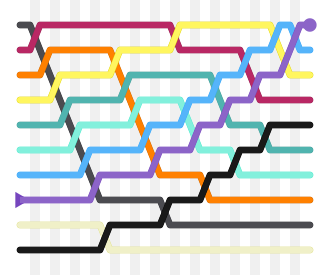
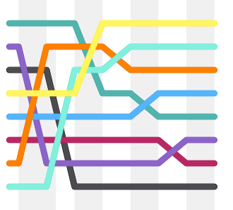

Introduction to algorithms
Bubble sort
Bubble sort is a simple sorting algorithm.
The algorithm starts at the beginning of the data set.
It compares the first two elements, and if the first is greater than the second,
it swaps them. It continues doing this for each pair of adjacent elements to the end of the data set.
It then starts again with the first two elements, repeating until no swaps have occurred on the last pass.
This algorithm's average time and worst-case performance is Θ(n2),
so it is rarely used to sort large, unordered data sets.
Bubble sort can be used to sort a small number of items (where its asymptotic inefficiency is not a high penalty).
Bubble sort can also be used efficiently on a list of any length that is nearly sorted (that is, the elements
are not significantly out of place). For example, if any number of elements are out of place by only one
position (e.g. 0123546789 and 1032547698), bubble sort's exchange will get them in order
on the first pass, the second pass will find all elements in order, so the sort will take only 2n time.

Insertion sort
Insertion sort is a simple sorting algorithm that is relatively efficient for small lists
and mostly sorted lists, and is often used as part of more sophisticated algorithms. It works
by taking elements from the list one by one and inserting them in their correct position into a
new sorted list similar to how we put money in our wallet. In arrays, the new list and the remaining elements
can share the array's space, but insertion is expensive, requiring shifting all following elements over by one.
Shellsort (see below) is a variant of insertion sort that is more efficient for larger lists.
Selection sort
Selection sort is an in-place comparison sort. It has Θ(n2) complexity, making it inefficient on large lists,
and generally performs worse than the similar insertion sort. Selection sort is noted for its simplicity, and
also has performance advantages over more complicated algorithms in certain situations.
The algorithm finds the minimum value, swaps it with the value in the first position, and repeats these steps
for the remainder of the list. It does no more than n swaps, and thus is useful where swapping is very expensive.
Quick sort
Quicksort is a divide and conquer algorithm which relies on a partition operation: to partition an array,
an element called a pivot is selected. All elements smaller than the pivot are moved before it and
all greater elements are moved after it. This can be done efficiently in linear time and in-place. The lesser
and greater sublists are then recursively sorted. This yields average time complexity of Θ(n log n), with low
overhead, and thus this is a popular algorithm. Efficient implementations of quicksort (with in-place partitioning)
are typically unstable sorts and somewhat complex, but are among the fastest sorting algorithms in practice.
Together with its modest Θ(log n) space usage, quicksort is one of the most popular sorting algorithms and is
available in many standard programming libraries.
The important caveat about quicksort is that its worst-case performance is Θ(n2); while this is rare, in
naive implementations (choosing the first or last element as pivot) this occurs for sorted data, which is
a common case. The most complex issue in quicksort is thus choosing a good pivot element, as consistently
poor choices of pivots can result in drastically slower Θ(n2) performance, but good choice of pivots yields
Θ(n log n) performance, which is asymptotically optimal. For example, if at each step the median is chosen
as the pivot then the algorithm works in Θ(n log n). Finding the median, such as by the median of medians
selection algorithm is however an Θ(n) operation on unsorted lists and therefore exacts significant overhead
with sorting. In practice choosing a random pivot almost certainly yields Θ(n log n) performance.
Shell sort
Shellsort was invented by Donald Shell in 1959. It improves upon insertion sort by moving out of order
elements more than one position at a time. The concept behind Shellsort is that insertion sort performs
in Θ(kn) time, where k is the greatest distance between two out-of-place elements.
This means that generally, they perform in Θ(n2), but for data that is mostly sorted, with only a few elements
out of place, they perform faster. So, by first sorting elements far away, and progressively shrinking the gap
between the elements to sort, the final sort computes much faster. One implementation can be described as
arranging the data sequence in a two-dimensional array and then sorting the columns of the array using
insertion sort. The worst-case time complexity of Shellsort is an open problem and depends on the gap
sequence used, with known complexities ranging from Θ(n2) to Θ(n4/3) and Θ(n log2 n).
This, combined with the fact that Shellsort is in-place, only needs a relatively small amount of code,
and does not require use of the call stack, makes it is useful in situations where memory is at a premium,
such as in embedded systems and operating system kernels.

| Name |
Best |
Average |
Worst |
Memory |
Stable |
| Bubble Sort |
n |
n2 |
n2 |
1 |
Yes |
| Insertion Sort |
n |
n2 |
n2 |
1 |
Yes |
| Selection Sort |
n2 |
n2 |
n2 |
1 |
No |
| Quick Sort |
n log n |
n log n |
n2 |
log n |
No |
| Shell Sort |
n log n |
n4/3 |
n3/2 |
1 |
No |